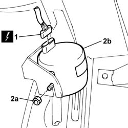

5580E40 ANTI-THEFT SIREN - R.R.
- Path
- Procedures > 55 ELECTRICAL EQUIPMENT > 5580 SPECIAL ACCESSORIES > 5580E ANTI-THEFT DEVICE > 5580E40 ANTI-THEFT SIREN - R.R.
- Kind
- repair procedure (removal / refitting; the operation number is the code)
- Applies to
- all engines; all production periods
- Interactive page
- https://sloeber94.github.io/elrnDB-lThss/en/#/150986
Applies to: all engines; all production periods
 Removing
Removing
 Refitting
Refitting- Disconnect the negative battery terminal.
- Position the vehicle on a lift.
See in Op. 4450B02 Left FRONT WHEEL (one) - R.R.
-
See in Op. 7055B42 FRONT WHEEL ARCH LINER (one), left or right - R.R.
- [left side]
See in Op. 7055B64 Engine compartment DUST SEAL in front wheel arch (one), left or right - R.R.
- [left side
1. Disconnect the electrical connector for the siren.
 | Description | Connector |
|---|---|---|
1 | Alarm siren | P090 |
2. Loosen the fixing nut (2a) and remove the siren (2b).

Applies to: all engines; all production periods
Refitting
Removing- Place the siren in the housing and tighten the fixing nut.
- Connect the electrical connector for the siren.
| Description | Connector |
|---|---|---|
. | Alarm siren | P090 |
See in Op. 7055B64 Engine compartment DUST SEAL in front wheel arch (one), left or right - R.R.
- (left side)
See in Op. 7055B42 FRONT WHEEL ARCH LINER (one), left or right - R.R.
- (left side)
- Connect the negative battery terminal.
- Remove the vehicle from the lift.
Topics linked from this page (3)
- 4450B02 Left FRONT WHEEL (one) - R.R.
- 7055B42 FRONT WHEEL ARCH LINER (one), left or right - R.R.
- 7055B64 Engine compartment DUST SEAL in front wheel arch (one), left or right - R.R.